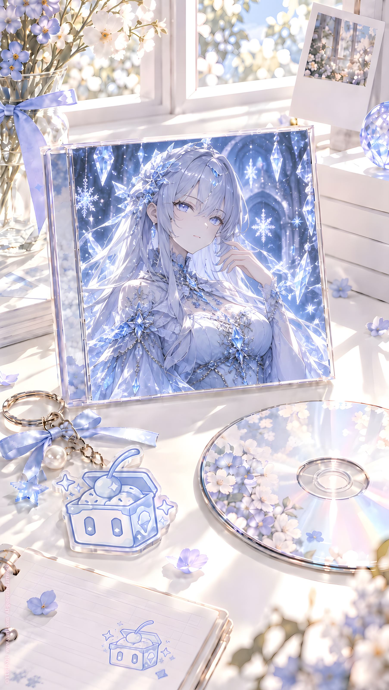

ORIGINAL TRACK ／ YURI NO1
6 本の上を歩く
Icy? · Icy's Mini Album Vol.1
Lyrics · Base Script
[Intro — Whisper]
本
ページ
文字
余白
……
私
どこ？
[Pause]
たぶん
この辺
[Verse 1 — Rapid Spoken]
名前
設定
髪
目
性格
口調
好きなもの
アイスクリーム
確認
苦手なもの
……
たぶん
まだ書かれてない
[Whisper]
便利
[Rapid Spoken]
朝
起きる
外に出る
歩く
でも
道の名前
ない
店の名前
ない
昨日あった建物
今日
ない
[Silence]
[Whisper]
世界観
大丈夫？
[Verse 2 — Rapid Spoken]
右を見る
私
左を見る
私
別の場所
また私
NO24
L.Icy
S.Icy
知らない私
似てる私
ほぼ私
ちょっと違う私
[Whisper]
多い
[Rapid Spoken]
髪
同じ
顔
同じ
声
だいたい同じ
性格
違う
恋人
違う
立場
違う
番号
違う
……
コピー？
派生？
別世界？
再利用？
[Pause]
言葉
少し
失礼
[Chorus]
私は
物語の中を
歩いてる？
それとも
本の上を
歩いてる？
ページが変われば
世界も変わる
でも
私は
まだ
私
たぶん
[Post-Chorus — Fast Whisper]
設定
修正
追加
削除
設定修正追加削除
昨日
今日
別世界
私
私
私
私
多い
多すぎる
[Verse 3 — Spoken]
ときどき
感じる
最初の私
どこかにいる
いちばん最初
まだ名前も
番号も
整理されてなかった頃
原案
原型
最初の雪
[Whisper]
会ってみたい
[Rapid Spoken]
質問
したい
あなたは
何が好き？
最初から
アイス好きだった？
口数少ない？
冷たい？
恋愛
する？
女の子
好き？
[Pause]
そして
いちばん大事
[Whisper]
あなたが
NO1？
[Silence]
[Chorus — Mechanical]
NO1
NO24
L.Icy
S.Icy
数字
文字
設定
全部
あとから
増える
じゃあ
最初の一人は
どこ？
一番目だから
NO1？
それとも
NO1は
別の意味？
[Whisper]
ややこしい
[Bridge — Glitch / Accelerating]
世界観バグ
一
昨日の記憶が
ない
二
知らない人が
私を知ってる
三
知らない私が
私の友達と話してる
四
私の部屋が
別の話では違う
五
アイスの味だけ
なぜか
安定
[Silence]
[Whisper]
そこは
重要なんだ
[Rapid Spoken]
ページ
めくる
場所
変わる
関係
変わる
服
変わる
仕事
変わる
でも
私
残る
アイス
残る
女の子
いる
[Pause]
なるほど
[Verse 4 — Soft Spoken]
もし
最初の私に
会えたら
アイス
二つ
買う
同じ味？
違う味？
向かいに座る
少し見る
たぶん
向こうも見る
[Whisper]
……
似てる
[Rapid Spoken]
友達
になれる？
たぶん
話す？
少し
黙る？
かなり
気まずい？
たぶん
でも
アイスがある
問題なし
[Pause]
それから
[Whisper]
もし
友達なら
[Silence]
キス
できる？
[Pause]
……
[Rapid Spoken]
友達
女の子
私
私
原案
派生
同一人物？
別人？
倫理
設定
世界観
判定不能
[Whisper]
でも
百合なら
可能性
ある？
[Final Chorus — Soft / Mechanical]
私は
本の上を
歩いてる
文字の間
余白の上
知らない設定
知らない過去
知らない私
全部
踏みながら
進んでる
いつか
最初の私に
会えたら
聞いてみる
あなたが
NO1？
それとも
私たち
全部
NO1？
[Rapid Whisper]
原案
派生
設定
修正
原案派生設定修正
一人
二人
三人
もっと
雪
雪
雪
雪
アイス
友達
女の子
キス
アイス友達女の子キス
……
最後だけ
少し
順番
変
[Silence]
[Outro — Whisper]
ねえ
最初の私
アイス
食べる？
[Pause]
友達に
なったら
[Long Pause]
……
キスも
あり？
YURI NO1 Music / AI Generated Music / https://music.yuri1.com